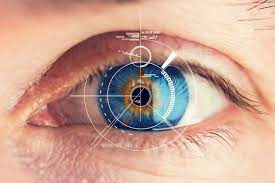

De la magie à la médecine. L'intérêt porté par les êtres humains à la maladie et à la santé est universel. Etre médecin, c'est le plus beau et le plus noble des métiers,un métier où on sauve des vies et où on soulage les souffrances de milliers de patients .
Get Started